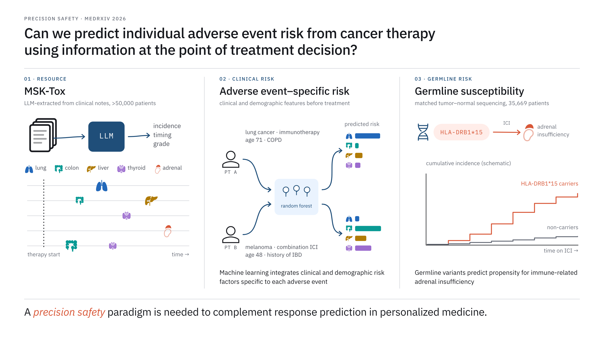

<!doctype html>
<html lang="en">
<head>
<meta charset="utf-8">
<title>Instrument / Prussian website specimen</title>
<link href="https://fonts.googleapis.com/css2?family=Instrument+Serif:ital@0;1&family=IBM+Plex+Sans:wght@300;400;500&family=IBM+Plex+Mono:wght@400;500&display=swap" rel="stylesheet">
<style>
/* Values copied from _sass/_fyng.scss for this specimen only. */
.light { --bg:#ffffff; --card:#ffffff; --text:#16181d; --light:#707480; --theme:#1f4e79; --hover:#c2412d; --div:#e8e8ea; --code:#f4f5f7; }
.dark  { --bg:#111317; --card:#16191e; --text:#e6e6e3; --light:#8b8f98; --theme:#86acd6; --hover:#ef7a5f; --div:#262a31; --code:#1b1f25; }
html, body { margin:0; background:#fff; }
body { width:1600px; height:900px; display:grid; grid-template-columns:1fr 1fr; font-family:"IBM Plex Sans", sans-serif; }
.pane { background:var(--bg); color:var(--text); padding:40px 56px; font-weight:300; font-size:16px; line-height:1.55; }
.nav { display:flex; justify-content:space-between; font:400 13px "IBM Plex Mono", monospace; color:var(--light); border-bottom:1px solid var(--div); padding-bottom:12px; }
.nav b { font-weight:500; color:var(--theme); }
.kick { font:500 12px "IBM Plex Mono", monospace; letter-spacing:.16em; text-transform:uppercase; color:var(--light); margin:22px 0 4px; }
h1 { font:400 54px/1.05 "Instrument Serif", serif; letter-spacing:-.01em; margin:10px 0 6px; }
h1 i { font-style:italic; }
.desc { font-size:14px; color:var(--light); }
h2 { font:500 12.5px "IBM Plex Mono", monospace; letter-spacing:.16em; text-transform:uppercase; color:var(--light); border-top:1px solid var(--div); padding-top:14px; margin:26px 0 10px; }
p { margin:0 0 8px; }
a { color:var(--theme); text-decoration:none; }
a.hover { color:var(--hover); }
strong { font-weight:500; }
.news { display:grid; grid-template-columns:96px 1fr; row-gap:6px; font-size:15px; }
.news time { font:400 13px "IBM Plex Mono", monospace; color:var(--light); padding-top:2px; }
.pub .t { font-weight:500; }
.pub .v { font:400 12.5px "IBM Plex Mono", monospace; color:var(--light); }
.fig { width:62%; margin-top:12px; border:1px solid var(--div); border-radius:2px; overflow:hidden; background:#fff; }
.fig img { display:block; width:100%; }
.swatches { display:flex; gap:10px; margin-top:18px; font:400 11px "IBM Plex Mono", monospace; color:var(--light); }
.swatches div { display:flex; flex-direction:column; gap:4px; }
.swatches span { display:block; width:52px; height:22px; border-radius:2px; border:1px solid var(--div); }
</style>
</head>
<body>
<script>
const pane = (cls, label) => `
<div class="pane ${cls}">
  <div class="nav"><b>fyng</b><span>about · publications · projects · cv</span></div>
  <div class="kick">${label}</div>
  <h1><i>Feiyang</i> Huang</h1>
  <div class="desc">PhD Candidate · Computational Biology &amp; Medicine</div>
  <h2>About</h2>
  <p>Body text is Plex Sans 300 with <strong>500 for emphasis</strong>. Links are <a>Prussian</a>; the hover state is <a class="hover">vermilion</a>.</p>
  <h2>News</h2>
  <div class="news"><time>Month YYYY</time><span>Sample news item with a <a>link</a></span><time>Month YYYY</time><span>Dates are Plex Mono, muted</span></div>
  <h2>Selected publications</h2>
  <div class="pub"><div class="t">Precision safety in oncology</div><div class="v">MEDRXIV · 2026</div></div>
  <div class="fig"></div>
  <div class="swatches">${["bg","text","light","theme","hover","div"].map(k => `<div><span style="background:var(--${k})"></span>${k}</div>`).join("")}</div>
</div>`;
document.write(pane("light", "Light theme") + pane("dark", "Dark theme · figure keeps its paper"));
</script>
</body>
</html>
